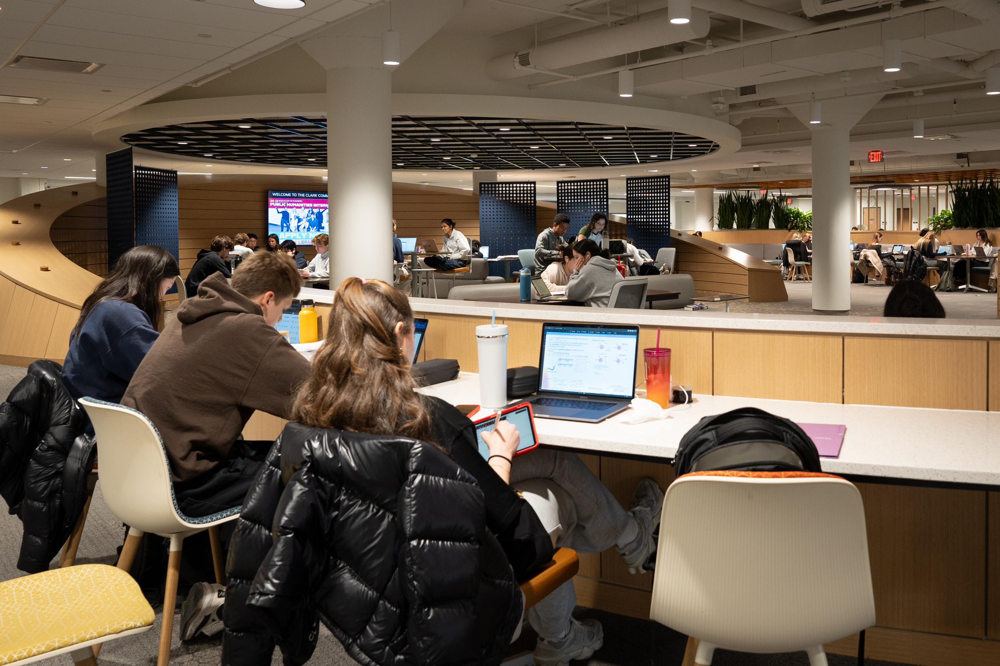

Throughout your time at UMSI, you will have your fair share of work. However, sometimes you might not be able to go home everytime you need to get work done. There are coffee shops on campus, but maybe the low murmers aren't for you. Maybe it's full with friends and coffee chats. Maybe, there aren't outlets nearby! Have no fear, the University of Michigan campus has plenty of campus spots fit for your study needs!
A deep dive into the University of Michigan Study Spots
In order to find the perfect study space for you, you need to know what you prioritize: location, volume, desk space, etc. I'll name a few big spots to consider
Shapiro Undergraduate Library (UGLI)

Students studying in the 3rd floor UGLI
Shapiro, endearingly termed the "UGLI", is a go to study spot highligted on campus tours. This spot is busy and each floor carries a unique vibe. For total silence, go to the 4th floor, or the basement. For an open space and low murmer, go to the recently renovated 3rd floor, but keep in mind that, due to its popularity, it may be hard to find seats. Also the first floor has coffee!
Hatcher Graduate LibraryStudents studying for Finals in the Reference Room of the Hatcher Graduate Library
Connected to the UGLI through the 3rd floor exists the Graduate Library filled with books and silent spots to work. In the picture above, students are featured in the spacious Reference Room, similar to the Law Library. Here, long rows of tables stretch across the room, with plenty of outlets under the table. This room is pindrop silent, so even the slightest cough can be heard. Often, students appreciate the silence and the shared drive surrounding them by their peers. I've heard it helps people focus!
The Law LibraryThe Law library in all its glory.
The law library is absolutely gorgeous and, similarly to the Hatcher Reference Room, is a silent space with lots of resources. Odds are you've already see the outside of the law library as you scroll through University photos because it's right in the beautifully maintained Law Quad, just a bit away from the diag. This spot is also in between Ross School of Business and the South Quad freshman Dorm/Dining Hall. Convenient! But, it does have less hours for the public
The Michigan UnionStudent looking intently at his laptop
One last big spot to mention is the Michigan Union which a central part of the University Campus. It has various floors, and hosts events constantly. On top of that, there are many food spots including Sweetwaters cafe and Panera Bread. Pick your spot!

.jpg)
.jpg)